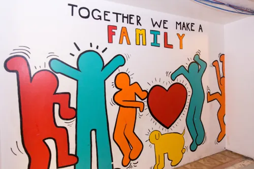

You are not a burden.
reStart Families Shelter
We offer family services based on referrals from the Kansas City Public School District. Our interim family housing welcomes up to 13 families at a time and you can stay for up to 90 days. Rooms in our family suites have beds, furniture, and a private bathroom. Case managers work with your family to connect you with resources and programs.
If you need emergency shelter, please call (816) 472-5664.
